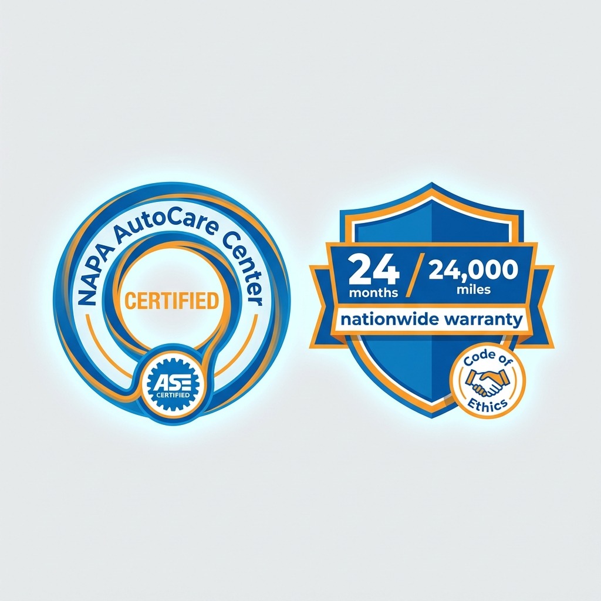

NAPA AutoCare Center • 1095 Foxworthy Ave, San Jose
Centro NAPA AutoCare • 1095 Foxworthy Ave, San Jose
LGB Autowork was founded by Brook with a clear mission: provide honest, expert automotive repair to the San Jose community. As a certified NAPA AutoCare Center, we combine the personalized service of a local business with the backing and reliability of a nationwide warranty network.
LGB Autowork fue fundado por Brook con una misión clara: proporcionar reparación automotriz honesta y experta a la comunidad de San Jose. Como Centro NAPA AutoCare certificado, combinamos el servicio personalizado de un negocio local con el respaldo y la confiabilidad de una red de garantía nacional.
Our 4.9 out of 5-star rating reflects our commitment to quality service and customer satisfaction. This exceptional rating is the result of consistently delivering honest diagnostics, transparent pricing, and reliable repairs to the families and businesses of San Jose.
Nuestra calificación de 4.9 de 5 estrellas refleja nuestro compromiso con el servicio de calidad y la satisfacción del cliente. Esta calificación excepcional es el resultado de entregar consistentemente diagnósticos honestos, precios transparentes y reparaciones confiables a las familias y negocios de San Jose.
With over 20 years of automotive experience and ASE Master Technician certification, Brook brings extensive expertise to every repair. ASE (Automotive Service Excellence) certification represents the industry's highest standard for automotive professionals.
Con más de 20 años de experiencia automotriz y certificación de Técnico Maestro ASE, Brook aporta amplia experiencia a cada reparación. La certificación ASE (Excelencia en Servicio Automotriz) representa el estándar más alto de la industria para profesionales automotrices.
Brook personally oversees repair work to ensure the highest quality standards are maintained. This hands-on approach, combined with commitment to transparency and customer satisfaction, has earned LGB Autowork its excellent reputation in the community.
Brook supervisa personalmente el trabajo de reparación para garantizar que se mantengan los más altos estándares de calidad. Este enfoque práctico, combinado con el compromiso con la transparencia y satisfacción del cliente, le ha ganado a LGB Autowork su excelente reputación en la comunidad.
Watch our professional team in action and see why we've been San Jose's top choice since 1994.
Vea a nuestro equipo profesional en acción y descubra por qué hemos sido la mejor opción de San José desde 1994.
Located at 1095 Foxworthy Ave in South San Jose, we've been serving local families and businesses with reliable automotive repair and maintenance services. Our bilingual team provides professional service in both English and Spanish.
Ubicados en 1095 Foxworthy Ave en el sur de San Jose, hemos estado sirviendo a familias y negocios locales con servicios confiables de reparación y mantenimiento automotriz. Nuestro equipo bilingüe proporciona servicio profesional en inglés y español.
As a certified NAPA AutoCare Center, LGB Autowork adheres to a strict Code of Ethics and meets rigorous certification standards. This certification provides you with additional peace of mind through nationwide warranty coverage.
Como Centro NAPA AutoCare certificado, LGB Autowork se adhiere a un estricto Código de Ética y cumple con rigurosos estándares de certificación. Esta certificación le proporciona tranquilidad adicional a través de cobertura de garantía nacional.

Covers both parts and labor. Honored at over 17,000 NAPA AutoCare Centers nationwide.
Cubre partes y mano de obra. Honrada en más de 17,000 Centros NAPA AutoCare a nivel nacional.
Our technicians meet ASE (Automotive Service Excellence) certification standards.
Nuestros técnicos cumplen con los estándares de certificación ASE (Excelencia en Servicio Automotriz).
We use quality NAPA parts backed by their manufacturer warranties.
Utilizamos partes NAPA de calidad respaldadas por sus garantías de fabricante.
We provide clear, written estimates before beginning any work on your vehicle.
Proporcionamos estimados claros y escritos antes de comenzar cualquier trabajo en su vehículo.
📍 LGB Autowork - NAPA AutoCare Center
1095 Foxworthy Ave, San Jose, CA 95118
📞 (408) 727-4500
✉️ mrripp@iowatelcom.net
🕐 Hours:🕐 Horario: Monday - Saturday, 8:00 AM - 5:30 PM
Closed Sundays
Cerrado Domingos